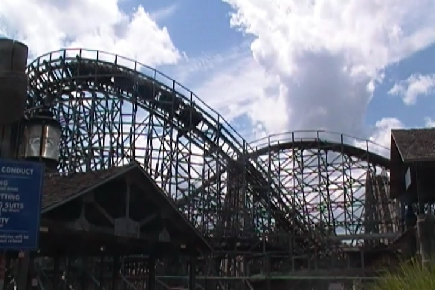
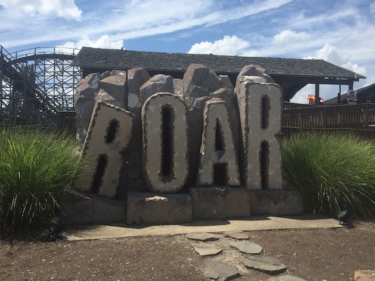

| |
Roar Review

We're here at Six Flags America. For today's ride, we'll be checking out their Wooden Twister Coaster, Roar. Some of you may be familiar with this ride as there used to actually be two Roars. However, one of them was converted into an RMC, and yeah. That's clearly a superior ride. But for the sake of strolling down memory lane, let's check out the Roar that still lives on at Six Flags America. Once you get in the trains and pull down the orange lap bar, you're off! We roll through a turn and down a small drop. It was fun. We then go through a small bump before heading up the lifthill. Nothing to see on this Roar aside from fields, and I guess Superman if you turn your head. But then, we get pulled down a nice twisty spiral drop. That drop gives a bit of speed. We then rise up a big hill and then started to get pulled down another twisty drop, leaving us with quite a bit of speed. We then twist up into a big airtime hill. You get a little floater air during this hill (though honestly, nothing special). We then drop back down and rise back up and head straight into a turn. This big swooping turn gives us a bit of laterals. You then get a really good pop of ejector air as you plunged down a drop. You SLAM through a turn before going through another airtime hill. You then get pinned to the side as you go through a big swooping turn. We then go over another small little hill. Again, nothing special, but hey! We are getting more airtime! =) We then head into a nice big swooping turn and go through a couple dips as we kept turning, but then, we dip back down to the ground, go through one final turn, go through a couple more bunny hops, and then, we finally hit the brake run. Roar is a fun GCI. But honestly, after all the great GCIs that came after it, it's pretty safe to say that this ride is outdated. I know they redid the SFDK Roar into Joker, and....that's cool. But in all honesty, the ride is nothing special. Yeah, it may be nostalgic for some. But keep it real. This isn't that special.
7/10
Location: Six Flags America
Opened: 1998
Built by: Great Coasters International
Last Ridden: July 22, 2019
I have ridden this exact same ride at the following parks.
Six Flags Discovory Kingdom
Roar Photos



Home
|